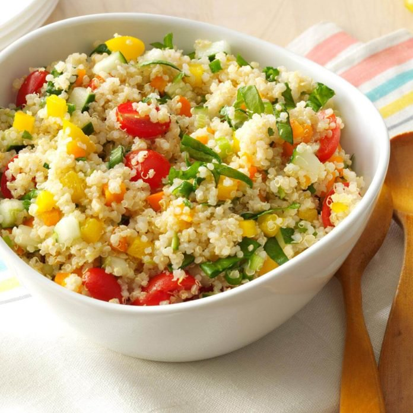

Salada de Quinoa
Ingredientes:
- 1 cebola picada
- 500 ml de água
- 1 folha de louro
- Sal a gosto
- 150 gramas de quinoa
- 1 fio de azeite
- 2 cogumelos shitake fatiados
- 2 colheres de sopa de cenoura picada
- 1 colher de sopa de azeitonas pretas picadas
- 1/4 de xícara de tomate picado
- 1 colher de chá de salsinha picada
- 1 colher (chá) de vinagre balsâmico
- Suco de 1 limão
Modo de Preparo:
Cozinhe a quinoa por 10 minutos em água fervente, com metade da cebola e a folha de louro. Coe a quinoa e reserve. Refogue os cogumelos com o restante da cebola. Em um tijela, misture os cogumelos com uma colher de sopa de cebola picada, a cenoura, as azeitonas, o tomate, a salsinha, o limão, o sal e, por fim, a quinoa reservada.